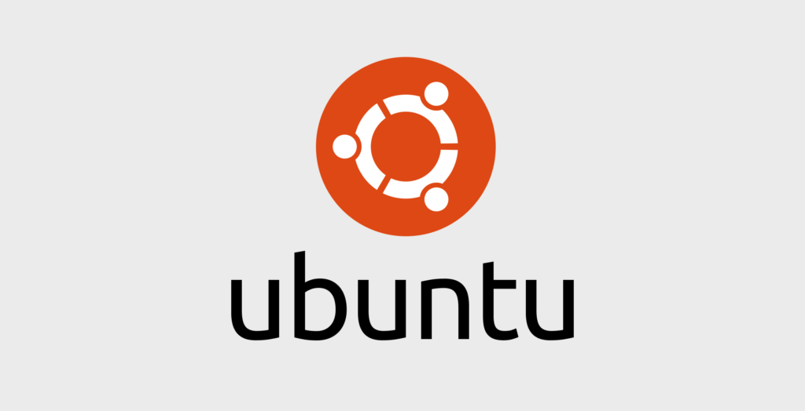

Ubuntu
Ubuntu — это популярный дистрибутив Linux, основанный на Debian, с упором на удобство использования. Он подходит как для новичков, так и для опытных пользователей. Выпуски бывают LTS (с долгосрочной поддержкой) и стандартные. Ubuntu использует менеджер пакетов APT и включает собственное графическое окружение GNOME (по умолчанию).